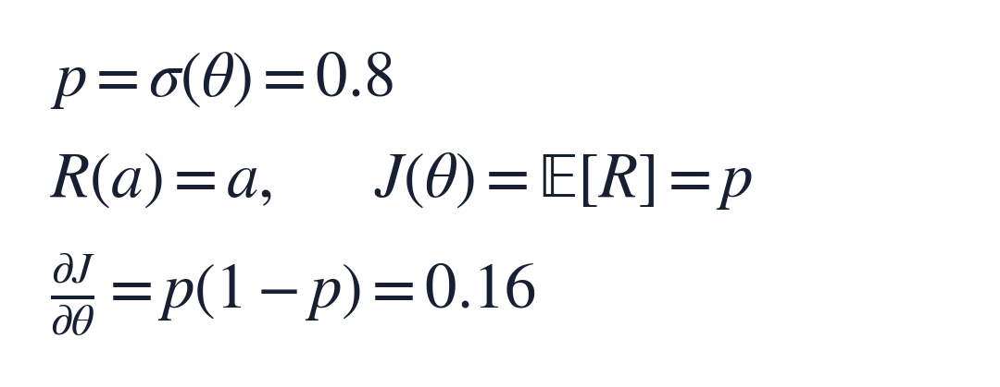
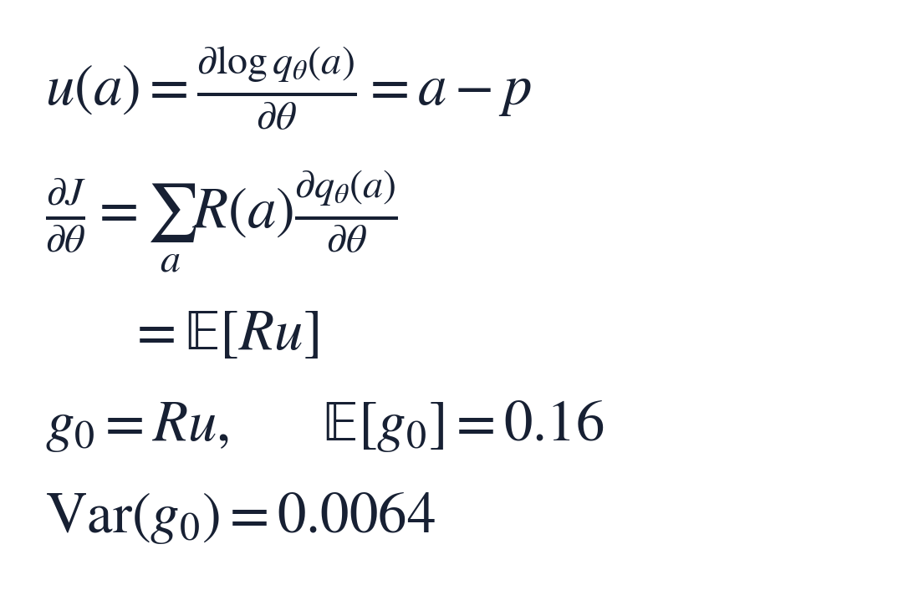
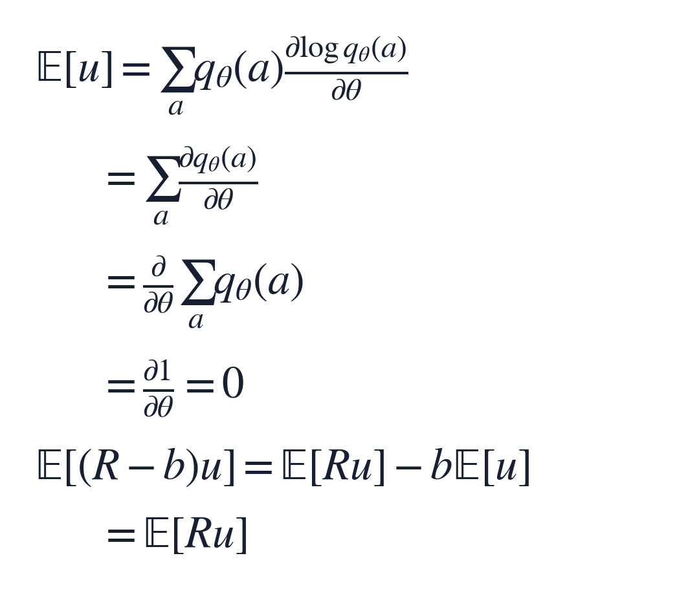
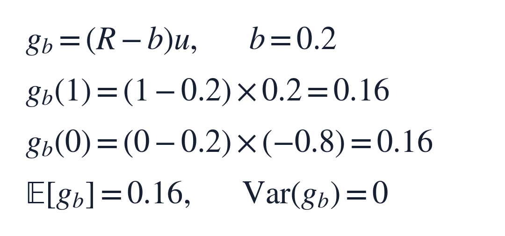
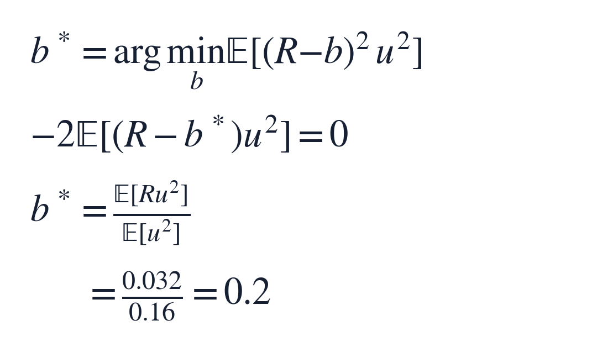

数学共性小课 001｜Baseline如何在不改变期望梯度的前提下降低方差？
阅读约 6–8 分钟｜2026 年 10 月 1 日
抽样算梯度时，我们希望有限的样本给出尽量稳定的更新方向。Baseline 做的事情很具体：减去一个合适的参照值，减小梯度估计的整体波动，同时保持它的期望不变。
这期用一枚可调的硬币，从头算清这件事，再把同一个结构放回策略梯度、离散潜变量和特征选择中。
1 先看清我们想减少的噪声
设随机开关 a 只有 0、1 两种结果，取 1 的概率为 p。抽到 1 得 1 分，抽到 0 得 0 分，奖励记为 R。我们要提高平均奖励 J。
模型调整的是参数 θ：它是概率 p 的 logit，也就是对赔率取对数；σ 是把 θ 变回概率的 sigmoid 函数。取 p 为 0.8，这个小问题的真实梯度可以直接算出来：


答案是 0.16。复杂问题通常没法直接求出这个答案，才需要抽样估计；这个能手算的例子，正好用来观察估计的噪声。
把结果 a 的概率记为 qθ(a)，再定义 score，记作 u：它是对数概率对 θ 的导数，衡量调整参数会怎样改变这一结果的概率。对这枚硬币，score 就是 a 减 p。
先看奖励不直接依赖 θ 的情况。把平均奖励的有限求和展开求导，可得到下面的 score-function 估计：一次抽样给出的梯度 g₀，就是奖励乘以 score。


具体到两种抽样结果：
- 抽到 1，score 为 0.2，奖励为 1，因此梯度估计为 0.2；这种情况占 80%
- 抽到 0，score 为 −0.8，奖励为 0，因此梯度估计为 0；这种情况占 20%
两者按概率加权，平均是 0.16，等于真梯度。这叫无偏。
但每次得到的仍是 0.2 或 0，围绕 0.16 摆动。方差是这些偏离的平方按概率取平均，本例为 0.0064。我们想做的，就是在不改变平均值的前提下，把这些摆动缩小。
2 为什么 baseline 能保留期望？
引入一个抽样前固定的参照值 b，叫 baseline。把原来的“奖励乘 score”，改成“奖励减 b，再乘 score”。这样相当于从每个梯度样本里减去 b 乘 score。
关键是：score 的期望为零。 因此，被减掉的这一项平均也为零。
先用硬币检查：score 为 0.2 的概率是 0.8，为 −0.8 的概率是 0.2；加权之后恰好抵消。这个性质来自概率总和恒为 1。对固定的有限取值集合，且各概率为正、可微，可以一步步写成：


读这几行时，只需要抓住三个动作：
1. 期望展开成“概率乘数值”的求和
2. 对数求导里的分母，与外面的概率相消
3. 所有概率的和是常数 1，对参数求导就是 0
最后两行说明：减掉 baseline 后，梯度估计的期望保持不变。我们保留了要学的方向，只改变各次抽样怎样贡献这个方向。
3 选一个合适的 baseline，噪声怎样缩小？
回到同一枚硬币，把 b 取为 0.2：


抽到 1 时，奖励差是 0.8，乘上 score 0.2，得到 0.16。
抽到 0 时，奖励差是 −0.2，score 是 −0.8，两个负数相乘，也得到 0.16。
现在，无论抽到哪一种结果，梯度估计都是真实值。期望仍是 0.16，方差从 0.0064 降到了 0。
可以这样理解 baseline 的作用：原来“抽到 1”承担了全部正向更新，“抽到 0”没有贡献；减去参照后，两类样本都能提供有用的正向信息。它们合起来的平均没有变化，但单次结果更稳定了。
4 0.2 是怎么选出来的？
对本课这个单参数估计器，我们希望“奖励差乘 score”尽量稳定。因为所有固定 baseline 下的期望相同，最小化方差就等于最小化这个乘积的平方均值。
把它看成关于 b 的二次函数，求导并令导数为零，就得到最优常数 baseline。这里假设相应二阶矩有限，且 score 的平方均值大于零：


它的含义很好记：用 score 的平方，给奖励做加权平均。 某种抽样结果会引起更大的梯度波动，选参照值时就应更重视它。
本例把两种结果代进去，分子为 0.032，分母为 0.16，所以得到刚才的 0.2。Greensmith 等对 baseline 与方差的研究
真实任务里，这些期望往往也未知。常见做法是用历史数据的滑动统计，或学习一个依赖当前输入的 baseline，让它预测评价信号中可预期的部分。训练时再检查梯度估计的波动是否下降，就能判断这个参照是否有帮助。
5 同一个数学结构，落在哪些实际问题里？
下面三个场景都可以按同一顺序理解：抽一个选择，得到评价，减去参照，再乘这个选择的 score。
策略梯度：让动作和当前处境比较
- 抽什么：在当前状态下，按策略抽一个动作
- 评价是什么：从这一步开始得到的采样回报
- 参照是什么：当前状态下通常能得到多少回报，常用状态价值网络来预测
减掉这部分预期水平后，更新更集中于这次动作表现得怎样。固定状态后，baseline 是同一个数，上面的零均值证明仍然适用。策略梯度原论文，第 3 节
离散潜变量：稳定编码器的学习信号
NVIL 中，编码器给定观测后抽出离散隐藏变量。评价信号是“生成模型的联合对数概率，减去编码器的对数概率”；baseline 则根据观测预测这个信号的通常水平。
于是，编码器也能用“评价减参照”乘 score 来更新。这里评价信号中的负对数编码器概率还显式依赖编码器参数，但它的直接导数期望恰好为零，因此仍得到这个形式。NVIL，式 (4)、(8)、(9)
随机特征选择：评价一组特征门的表现
INVASE 为每个输入抽取一组 0/1 特征门，决定这次保留哪些特征。评价是“只用这些特征的预测损失，加上特征数量惩罚”；baseline 是另一个使用全部特征的模型的预测损失。
给定样本和预测器后，baseline 不随这次抽到的特征门改变。选择器把两者之差乘上门的 score，按降低损失的方向更新。INVASE，作者论文中的方法与推导
这三个应用的共同点不是名字相似，而是都在利用同一条性质：score 的零均值，让我们能够减掉可预测的背景信号，改善梯度估计。
一小段使用边界
本课采用的无偏充分条件是：给定上下文后，baseline 不依赖当前抽样结果；用自动微分实现时，奖励差应当作常数权重，使用 stop_gradient。合适的 baseline 才能降低方差，普通奖励均值未必最优；本例方差降至零，也依赖两种结果、确定奖励的特殊结构。若评价信号直接依赖参数，还需计算相应的直接求导项。
本期带走一句话：用零均值的 score 保住期望，用合适的 baseline 缩小梯度样本的波动。
数值核验：本课的硬币例子、梯度与方差、最优 baseline，已用 Python 对全部可能结果精确枚举复核。